1. Introducción
Bienvenido a BinaryTEC. Esta guía le mostrará cómo crear una cuenta, solicitar una reparación para sus dispositivos y cómo seguir el progreso de su ticket hasta que esté solucionado.
2. Crear su Cuenta e Iniciar Sesión
Para usar nuestros servicios, primero necesita una cuenta.
Registrar una Nueva Cuenta
En la esquina superior derecha de la página de inicio, haga clic en el ícono de usuario y seleccione "Registrarse".
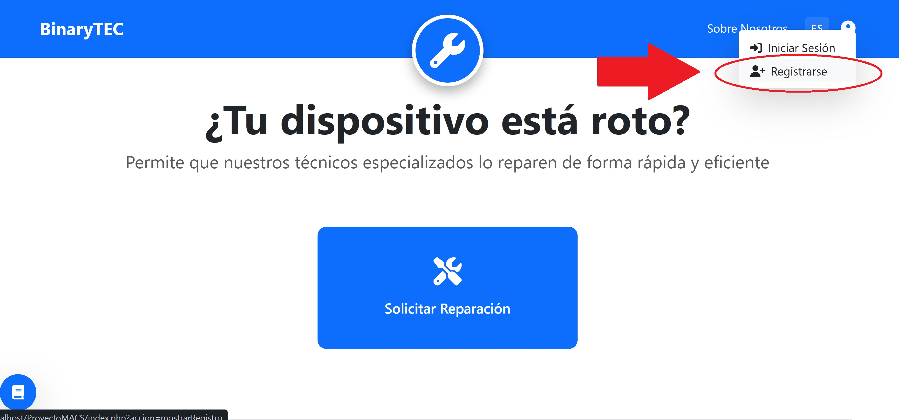
Complete el formulario con su nombre de usuario, correo electrónico y una contraseña segura.
Confirme su contraseña y haga clic en "Registrar Usuario".
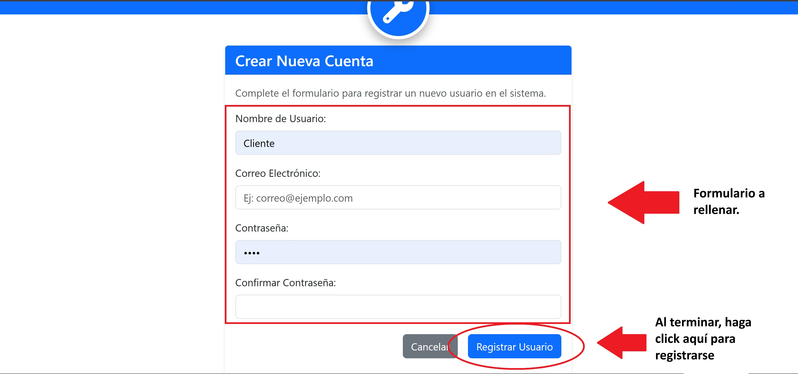
Iniciar Sesión
Haga clic en el ícono de usuario y seleccione "Iniciar Sesión".
Ingrese su nombre de usuario y contraseña.
Haga clic en "Entrar". Si sus datos son correctos, accederá a su cuenta.
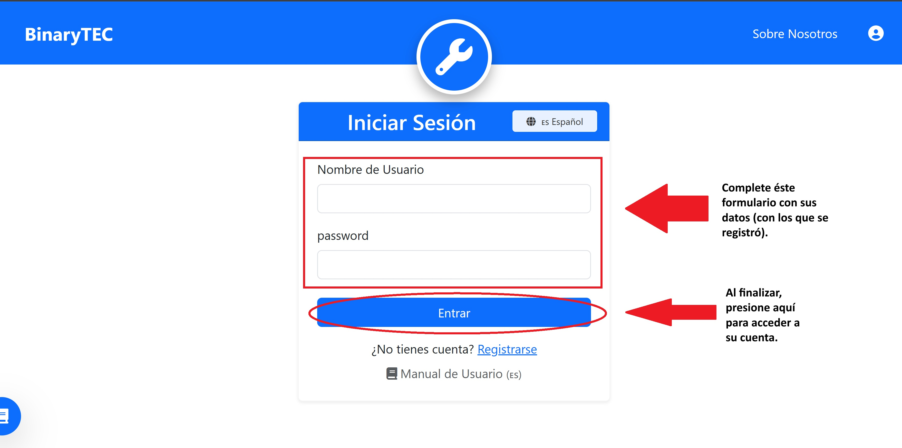
3. Gestionar sus Solicitudes
Una vez dentro de su cuenta, el proceso es muy sencillo.
Paso 1: Solicitar una Reparación
Cuando tenga un dispositivo con problemas, este es el primer paso:
En la página de inicio, haga clic en el botón grande "Solicitar Reparación".
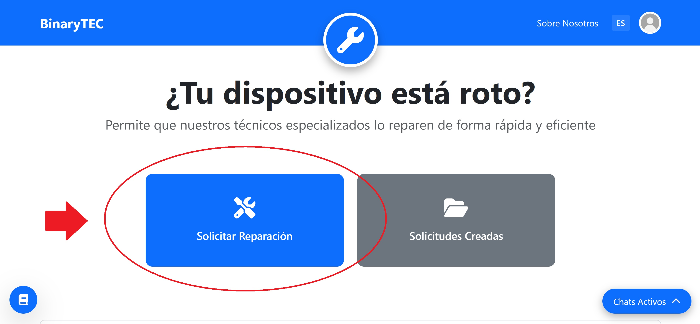
Complete el formulario con los detalles de su equipo (ej: Laptop, HP, Pavilion 15).
Describa el problema que está experimentando. (Ej: "La pantalla parpadea", "No enciende").
(Opcional) Si tiene fotos del problema, puede adjuntarlas para ayudar al técnico.
Haga clic en "Enviar Solicitud".
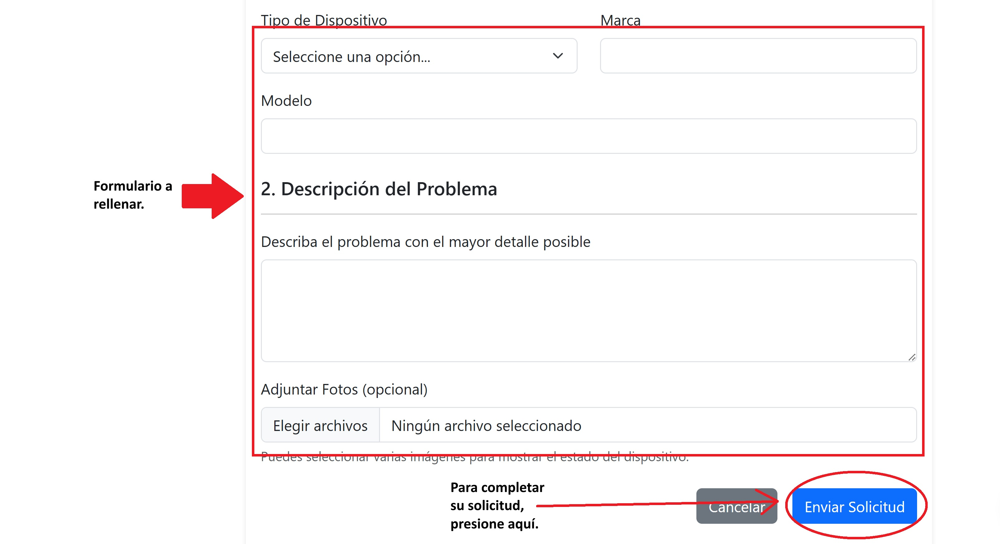
Importante: Si no ha iniciado sesión, el botón "Solicitar Reparación" lo llevará primero a la página de inicio de sesión.
Paso 2: Ver sus Solicitudes
Para ver el estado de todos sus tickets, haga clic en su foto de perfil (arriba a la derecha) y seleccione "Mis Solicitudes", o use el botón de acceso directo en la página de inicio.
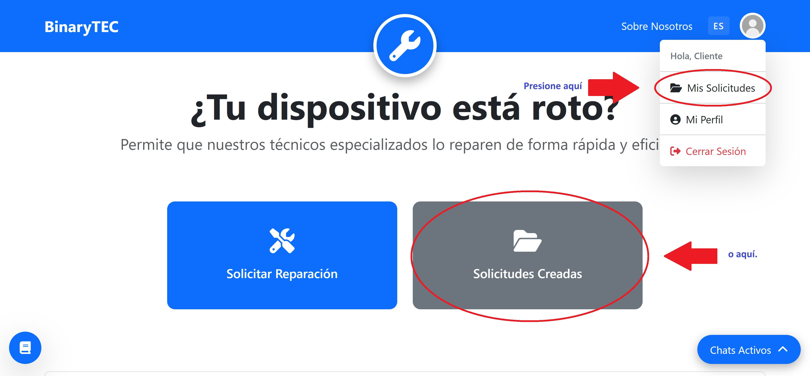
En esta pantalla encontrará dos listas:
- Solicitudes Activas: Tickets que están actualmente en proceso (Ingresados, En diagnóstico, etc.).
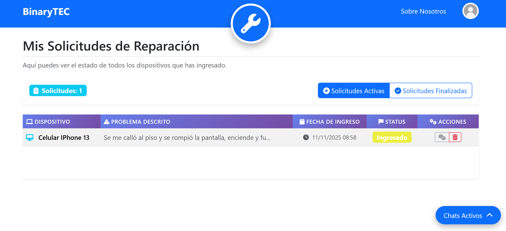
- Solicitudes Finalizadas: Un historial de todos los trabajos que ya han sido completados.
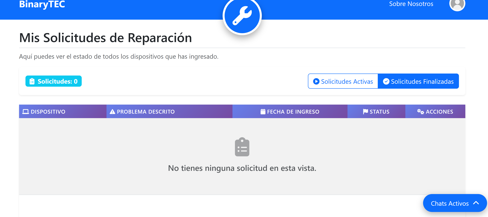
Paso 3: Entender el Estado de su Ticket
En la lista de solicitudes, verá una insignia de color que le indica el estado de su reparación. Los estados más comunes son:
- Ingresado: Hemos recibido su solicitud y pronto será asignada.
- En diagnóstico: Un técnico está revisando su dispositivo.
- Esperando aprobación: El técnico le ha enviado un presupuesto o consulta y espera su respuesta.
- En reparación: ¡Estamos trabajando en la solución!
- Listo para retirar: Su dispositivo está reparado y puede pasar a buscarlo.
Paso 4: Acciones del Ticket (Chat y Eliminar)
En la columna "Acciones" de sus solicitudes activas, tiene dos opciones:
Chatear con el Técnico
Este botón le permite hablar directamente con el técnico asignado a su caso. Tenga en cuenta:
- El botón de chat aparecerá **gris y desactivado** al principio.
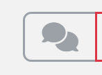
- Se volverá **azul y funcional** en el momento en que un técnico sea asignado a su ticket.
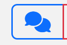
Eliminar Solicitud
Si desea cancelar una solicitud que acaba de crear o que ya no necesita, puede usar este botón. El sistema le pedirá una confirmación antes de borrarla.
4. Su Cuenta y Preferencias
Usted tiene control total sobre su cuenta y la apariencia de la plataforma.
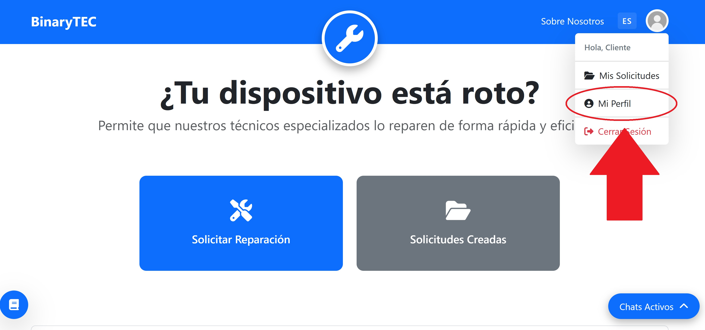
Mi Perfil
Al hacer clic en su foto de perfil y seleccionar "Mi Perfil", puede:
- Cambiar su Foto de Perfil: Subir una nueva imagen desde su dispositivo.
- Actualizar sus Datos: Cambiar su nombre de usuario, email o teléfono.
- Cambiar su Contraseña: Se le pedirá su contraseña actual por seguridad.
- Activar Modo Oscuro: Usar el interruptor para cambiar a un tema visual oscuro, que es más cómodo para la vista en condiciones de poca luz. El sistema recordará su elección.
Notificaciones por Email
No necesita hacer nada para activarlas. Cuando su ticket alcance un estado importante (como **"Listo para retirar"**), nuestro sistema le enviará automáticamente una **notificación a su correo electrónico** para mantenerlo informado.